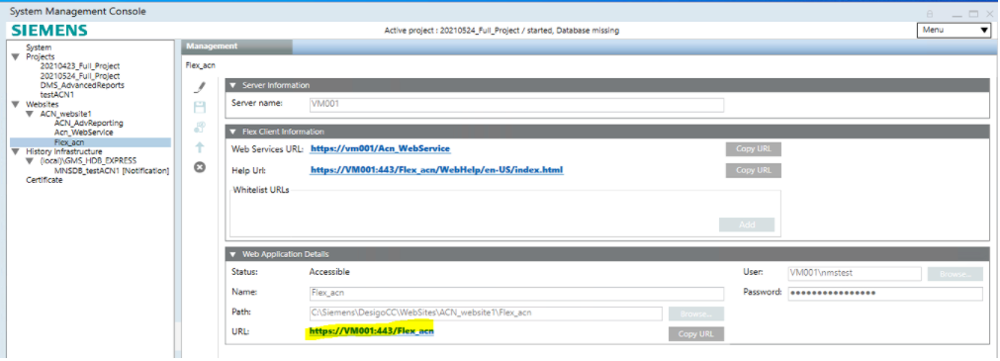

Flex Client Application
Web applications are created under websites in SMC.
- For a local IIS deployment, do these steps on the Desigo CC server station.
- For a remote IIS deployment, do these steps on the separate Client/FEP station that hosts the IIS server.
- A website and a web services application have been configured for Flex Client.
- (Recommended if the web service is under different website) The web service URL is copied to the clipboard. To do this, select Websites > [website] > [web service] and, in the Web Application Details expander, click Copy URL.
- In SMC, select Websites > [website].
This can be the same website under which you created the web service, or a different one. The URL of the website will determine the URL of the Flex Client application that users must enter in their browsers (highlighted in yellow in the image below). - Click
 and select Create Flex Client Application.
and select Create Flex Client Application. - In the Server Information expander:
- If you are working on the Desigo CC server station (local IIS), the Server name field is read-only.
- If you are working on an Installed Client / FEP (remote IIS), in the Server name field enter the host name of the Desigo CC station.
- In the Flex Client Information expander, next to Web Services URL, select the previously configured web service from the drop-down list, or paste its URL into the field.
- In the Web Application Details expander:
- Enter a Name for the Flex Client application.
- The User and Password fields are pre-filled to those of the website user.
- Click Save
 , and click OK to start creating the application.
, and click OK to start creating the application.

You can test the web application using the URL link:
- If you click the link, the Flex Client login page will display.
- This URL must also be reachable from the networked client stations where you want to run Flex Client (see next section).